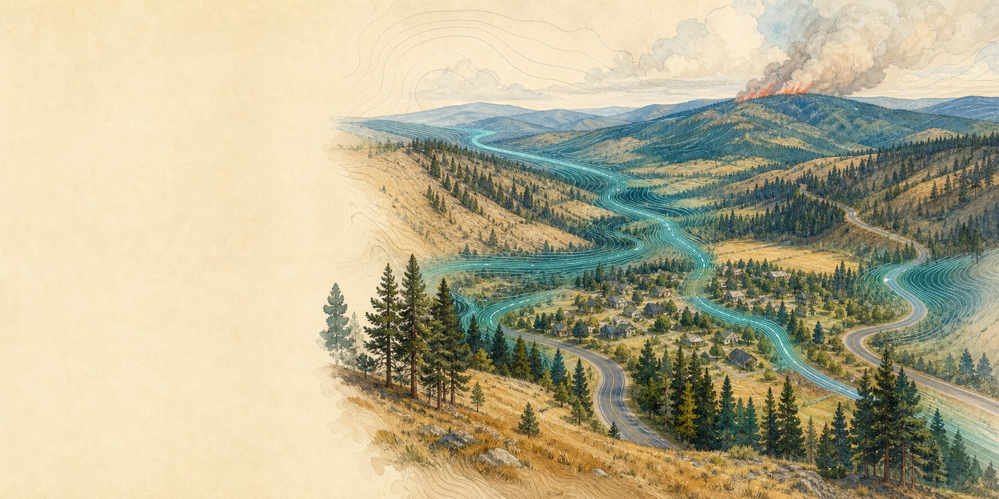
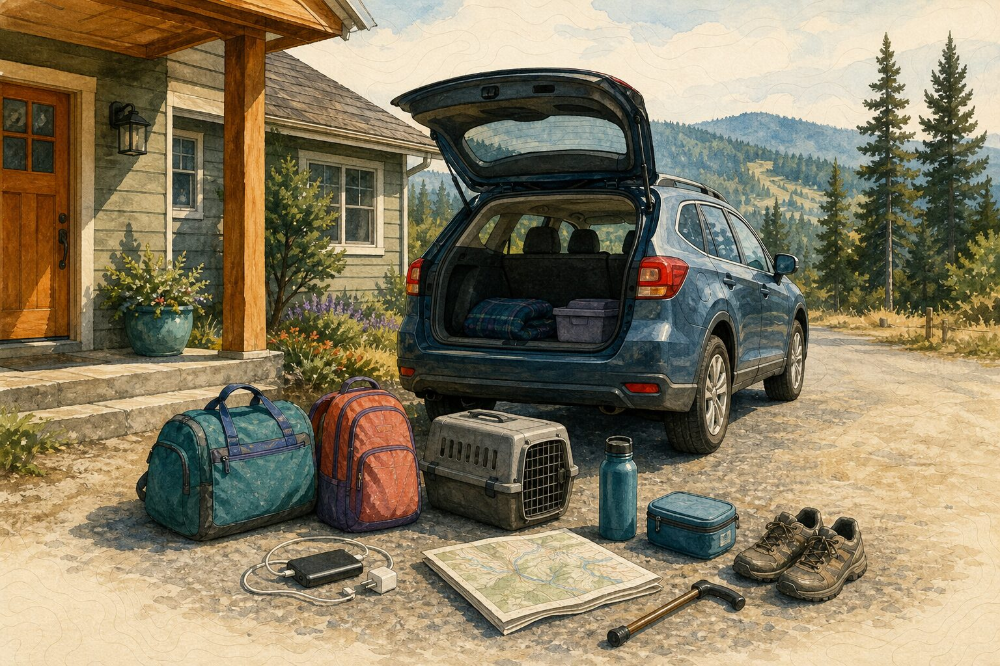
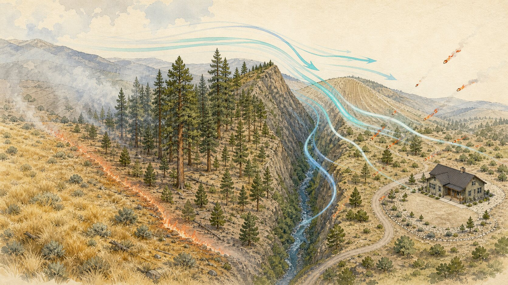

Chapter two · Wildfire
Wildfire
By the dry edge of the year, the practical question is not how dramatic the smoke looks. It is how much usable time remains on the road.
A household guide for Washington, Oregon, and southern British Columbia · Conditions and terminology vary by jurisdiction · Reviewed July 13, 2026
If fire is close or an evacuation instruction is activeImmediate reference
If fire is affecting your area now.
-
Leave now
Order, Level 3, or Tactical Evacuation
Use the directed route immediately. Do not delay departure to pack, defend the structure, water the roof, or shut utilities. Follow any explicit local or utility instruction that does not delay leaving.
-
Use the earlier threshold
Level 2 and B.C. Evacuation Alert are distinct
Washington or Oregon Level 2: significant danger exists; be ready to leave immediately, and leave when your household needs more time or you feel unsafe.
B.C. Evacuation Alert: be ready to leave on short notice and follow the issuing First Nation or local authority. In either system, read the exact notice for your location.
-
If you cannot leave
Give responders your location
Call 911, state exactly where you are, and follow responder instructions. Help may be delayed.
A fire report is not an evacuation instruction. A Red Flag Warning describes dangerous fire-weather potential, not an order to leave. A perimeter is an observed boundary, not a forecast. The authority issuing instructions for your location outranks every regional map.
The dry edge of the year
The season tightens a little at a time.
It begins in ordinary ways: grass loses its spring green, needles collect in gutters, roadside dust hangs a moment longer behind a truck, and the afternoon wind arrives warm. West of the Cascades, a damp forest can still dry enough to carry fire. East of the crest and through the interior valleys of British Columbia, fire may be a more familiar part of the summer landscape. No single calendar describes all of it.
Wildfire belongs to many Cascadian ecosystems, but not always in the same form or at the same interval. The Confederated Tribes of Siletz Indians describe cultural burning as traditional knowledge and skill applied to Oregon lands for First Foods and materials. That work is living, place-specific stewardship; it is not a synonym for government prescribed fire. Fire exclusion, land-use change, invasive plants, development, forest condition, weather, and climate have altered the pattern in different ways from coast to grassland to interior forest.
For a household, the most consequential part of that complexity is often simple: a road can become unusable before a flame reaches the neighborhood. Smoke can hide distance. Wind can move embers beyond a mapped edge. A person who needs help transferring into a vehicle, a family moving livestock, or a household with one driver needs more time than a map can promise.
A household rehearsal
Leaving before the road decides for you.
Composite household: Rina, Cal, and June are not identifiable residents. Their route, mobility, animal, smoke, and medication decisions combine common regional conditions with established guidance.
Rina and Cal rent a small house at the edge of an east-slope town. The yard meets dry grass, then ponderosa pine. One road drops toward the highway; the other crosses a narrow bridge that can be closed by smoke, equipment, or the fire itself. Rina’s mother, June, lives with them and uses a cane. Their old dog will enter a carrier, but never quickly.
Their wildfire plan is less complete than they once imagined it would be. They have one vehicle. The carrier is awkward. June’s medication changes often enough that it cannot live forgotten in a bag, and summer heat makes the car a poor storage place. What they do have is a short list beside the door, a paper map, a friend outside the valley, and an agreement that they will use an earlier departure threshold than a household that can move in five minutes.
When a county message reports a Level 1 notice in their area, nothing outside the window looks urgent. That is useful time. Cal brings the carrier inside. Rina puts current medication, identification, chargers, water, walking shoes, and the cane beside the bags. June calls the friend who has agreed to receive them. They read the notice itself instead of relying on a screenshot passed around a neighborhood thread.

Later, the notice changes. The local instruction says Level 2. Smoke has settled into the valley and June’s breathing is already uncomfortable. They do not wait to see flame, and they do not finish every task. Cal leaves the garden hose where it is. Rina sends one message with their destination. The dog complains from the carrier all the way down the road.
They do not know what the house will look like when they return, whether the highway will remain open, or how the wind will change. The plan does not give them certainty. It gives them enough shared understanding to leave while both routes are still choices.
The road is part of the fire plan.
Fuel, weather, terrain, and embers
Fire can move beyond the line you can see.
An observed perimeter is valuable, but it cannot settle the household decision. Fire behavior responds to material on the ground, the air moving through the landscape, and the shape of the land itself.

Fire follows continuity. Grass, needles, brush, fences, decks, sheds, and structures ignite differently, but each can become the next receptive surface. Temperature, humidity, and precipitation change how readily that path burns. Wind and slope change its speed and direction, while embers can cross roads and rivers to begin a new path ahead of the visible edge.
At a home, the work begins close: roof and gutter debris, vulnerable vents and gaps, combustible material beside a wall, and the place where a fence or deck meets the structure. The common immediate-zone principle is useful, but the terminology and recommended distances differ. Renters, apartment residents, homeowners, and people on shared or Tribal land have different control over the building and surrounding property. Local fire and building guidance should define the work.
That household work does not replace community-scale stewardship, land management, utility maintenance, safe access, or public response. Nor does it guarantee a building will survive. It simply removes some of the easier pathways by which an ember can turn a landscape fire into a structure fire.
Departure, smoke, and the household
Preparation is mostly time you give back to yourself.
The useful plan is not one perfect bag. It is a set of agreements that keeps people from solving transport, medication, animals, clean air, and communication for the first time while the margin is already shrinking.
Start with official information. Know which county, municipality, regional district, band office, First Nation, sheriff, or emergency manager issues evacuation instructions where you live. Keep more than one way to receive them. A local alert, radio, printed number, or neighbor agreement can matter when cellular service is congested or power is out.
Then make the route honest. Who drives? What happens if that person is away? Where can the household go with a pet, service animal, or livestock? Which destination can support medication, mobility equipment, refrigeration, oxygen, charging, language, or caregiving? If the route is narrow, steep, ferry-dependent, or easily blocked, the household threshold should leave more time.
Smoke is a second geography. Fine particles can affect people far from the fire edge. In the United States, follow local air guidance and the AQI; in Canada, follow the AQHI and provincial advisories. A well-fitted particulate respirator can reduce particle exposure, but it does not remove gases and it does not make a hot room safe. A cleaner-air space needs filtration and a plan for keeping it cool enough. Outdoor workers, children, older adults, pregnant people, and people with heart or lung conditions may need different advice from a health professional.
The household plan can be built gradually. Continue with household capabilities →Or keep the wildfire steps current in NowWePlan →
What the plan is for
Leaving is an act of care, not a verdict on the home.
A household may do careful work and still lose property. Another may leave with an unfinished bag and return to find everything unchanged. Preparedness cannot decide the wind, keep a road open, or guarantee what happens to a structure.
It can make one choice less crowded. It can put the cane beside the door, the carrier in the room before the dog is frightened, the medication in a hand that knows where it belongs, and the destination in somebody else’s phone. It can leave enough attention to notice the neighbor who may need the same margin.
Keep this part close
Wildfire quick reference.
Use the instruction for your exact location. Do not wait for a regional map to confirm what the issuing authority has already told you.
Departure
- Order, Level 3, or Tactical Evacuation: leave immediately by the directed route.
- Washington or Oregon Level 2: be ready to leave immediately, and depart when your household needs more time or you feel unsafe.
- B.C. Evacuation Alert: be ready to leave on short notice and follow the issuing First Nation or local authority.
- Do not delay departure to pack, defend the home, water the roof, or shut utilities. Follow any explicit local or utility instruction that does not delay leaving.
- If trapped, call 911, give your location, and follow instructions.
Smoke
- Follow AirNow/AQI or AQHI and local public-health guidance.
- Use filtration and recirculation without allowing the indoor space to overheat.
- Use a suitable particulate respirator when guidance and your health needs call for one.
- Check the destination’s air before assuming another town is cleaner.
Return
- Return only when the responsible authority permits re-entry.
- Avoid hot ash, damaged trees, downed lines, unstable structures, and unsafe water.
- Document damage from a safe place before major cleanup.
- Keep watching for renewed smoke, road changes, flooding, erosion, and debris-flow guidance.
Sources and limits
The local issuer outranks the regional picture.
Reports and mapped perimeters can be incomplete or delayed, and containment does not determine household safety or road access. During an event, follow the evacuation and emergency authority for your exact location.
Reviewed July 13, 2026
Evacuation
Fire, stewardship, and home
- BC Wildfire Service: Fuel, weather, topography, and fire behavior
- Confederated Tribes of Siletz Indians: Fire Ecology Curriculum
- Washington DNR: Defensible space and home preparation
- Oregon State Fire Marshal: Wildland-urban interface guidance
- FireSmart BC: Home ignition zones
- U.S. Geological Survey: Postfire debris-flow hazards